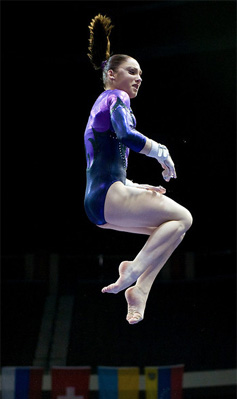

Aliya Mustafina (RUS)
2010 World AA Champion 
2012 and 2016 Olympic UB Gold Medalist
2013 European AA Champion
Medal Total
Olympic Games: 2 Gold, 2 Silver, 3 Bronze
World Championships: 3 Gold, 4 Silver, 5 Bronze
Aliya was born on September 30, 1994. Her father, Farhat, was a wrestler who won a bronze medal at the 1976 Olympics. In November 2016, Aliya married bobsledder Alexei Zaitsev, and their daughter
Alisa was born in July 2017. The couple divorced in 2018
. Aliya officially announced her retirement from competitive gymnastics at the 2021 Russian Cup. She's currently working as a coach for the Russian junior national team.
Competition Results
2005
Jr. Stella Zakharova Cup: 17th AA
2007
International Junior Champs: 2nd AA, 2nd V, 2nd UB, 2nd B, 2nd FX
Jr. Gymnix: 2nd AA
2008
Jr. European Championships: 1st Team, 2nd AA, 4th UB, 4th FX
2009
Doha Gymnasiade: 1st AA
Russian Championships: 1st AA
2010
European Championships: 2nd UB, 2nd B, 8th FX
Japan Cup: 3rd AA
World Championships: 1st Team, 1st AA, 2nd V, 2nd UB, 2nd FX, 7th B
2011
American Cup: 2nd AA
European Championships: 24th AA
2012
Olympic Games: 2nd Team, 3rd AA, 1st UB, 3rd FX
Russian Championships: 1st AA
2013
European Championships: 1st AA, 1st UB
Russian Championships: 1st AA
Stella Zakharova Cup: 1st AA, 1st UB, 2nd B
University Games: 1st Team, 1st AA
World Championships: 3rd AA, 1st B, 3rd UB
2014
DTB Cup: 5th AA
European Championships: 2nd UB, 3rd B
Russian Championships: 1st AA
World Championships: 3rd Team, 4th AA, 3rd B, 3rd FX, 6th UB
2015
European Games: 1st AA, 1st UB, 2nd FX
2016
European Championships: 1st B, 3rd UB
Olympic Games: 2nd Team, 3rd AA, 1st UB
Russian Championships: 3rd AA
2018
World Championships: 2nd Team, 5th UB
2019
Birmingham World Cup: 1st AA
DTB Cup: 5th AA
Russian Championships: 2nd AA
This page was created on April 13, 2020 and was last updated on July 19, 2021.
© Gymn Forum